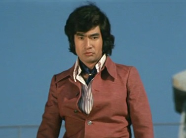
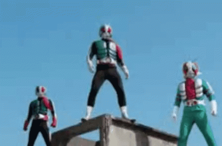
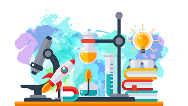
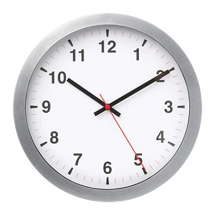

仮面ライダー

石ノ森 章太郎
いしのもり しょうたろう

1938年 - 1998年
漫画家
サイボーグ009、スーパー戦隊（パワーレンジャー）と仮面ライダーを作りました。

仮面ライダーは1971年に始まりました。
本郷 猛（ほんごう たけし）はショッカーというテロ組織に戦います。
仮面ライダー（1971年）
「仮面ライダー」っていったいなんですか？

正義
仮面ライダーは正義の味方です。
バイク
仮面ライダーはバイクを乗ります。

キック
仮面ライダーはライダーキックで敵を倒します。

ダブル（W）
2009年 - 2010年

テーマ： 探偵、二人

オーズ（OOO）
2010年 - 2011年

テーマ： 動物、欲望


フォーゼ（Fourze）
2011年 - 2012年

テーマ： 宇宙、友情

ウィザード（Wizard）
2012年 - 2013年

テーマ： 魔法
鎧武（Gaim）
2013年 - 2014年

テーマ： 戦国時代、果物


ドライブ（Drive）
2014年 - 2015年

テーマ： 警察

ゴースト（Ghost）
2015年 - 2016年

テーマ： 幽霊

エグゼイド（Ex-Aid）
2016年 - 2017年

テーマ： 医学、ゲーム

ビルド（Build）
2017年 - 2018年

テーマ： 科学
ジオウ（Zi-O）
2018年 - 2019年

テーマ： 時間
